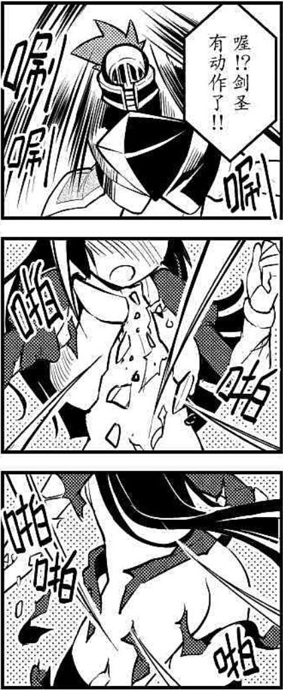

ST選開：需開放物品破壞規則才可進行強化
劍圣技——圣光崩滅
C+2000
劍圣阿特普斯于迷宮競技場領悟的極速劍技，這是一種極為可怕的劍技。
你需要手持一把擁有【神兵】特性的武器來使用這個招式，并事先盯著目標至少兩輪的時間，在發動前都需要盯著，不過只要期間視線并沒有離開目標，那么，你依然可以正常的做其他事情。特殊，如果你有過目不忘專長或類似能力，并且對方在這期間并沒有更換防具，那么你可以提前去盯著目標兩輪來記住這個目標，而不需要一直盯著，你只能同時這樣記住一個目標。
使用一個標準動作發動，你對目標極速揮動武器，奪目的光芒閃耀于此，這次攻擊中你對目標身上的所有衣物、盔甲，包括腰帶，頭繩之類的物品進行攻擊。在這次攻擊中你額外獲得10點破甲，忽視10點硬度，這都屬于技藝加值。
升級：C+1000
現在你可以用一個反射動作來觀察目標而不需要盯兩輪。如果你有過目不忘專長或類似能力，現在你可以同時記住多個目標，但數量不能超過你的智力附加成功數。
你在攻擊時的破甲再加5點，忽視的硬度提高4點。并且你可以通過永久摧毀你用來使用招式的武器（至少需要B級）為代價，抵消對方防具的不可損毀特性，效果的支線等級為你手中武器的支線等級+1。
st選開：在你攻擊相貌在8以上的生物時，該招式里所有效果+1，相貌每多10，效果再+1。
